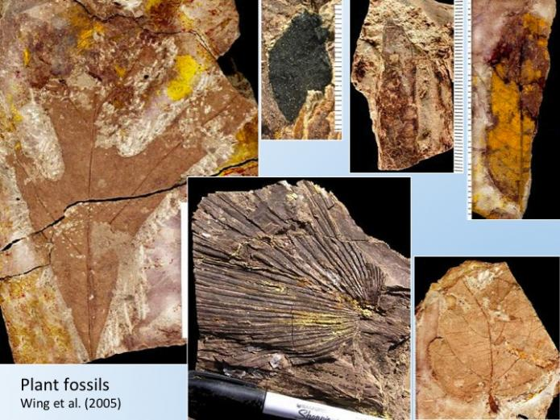
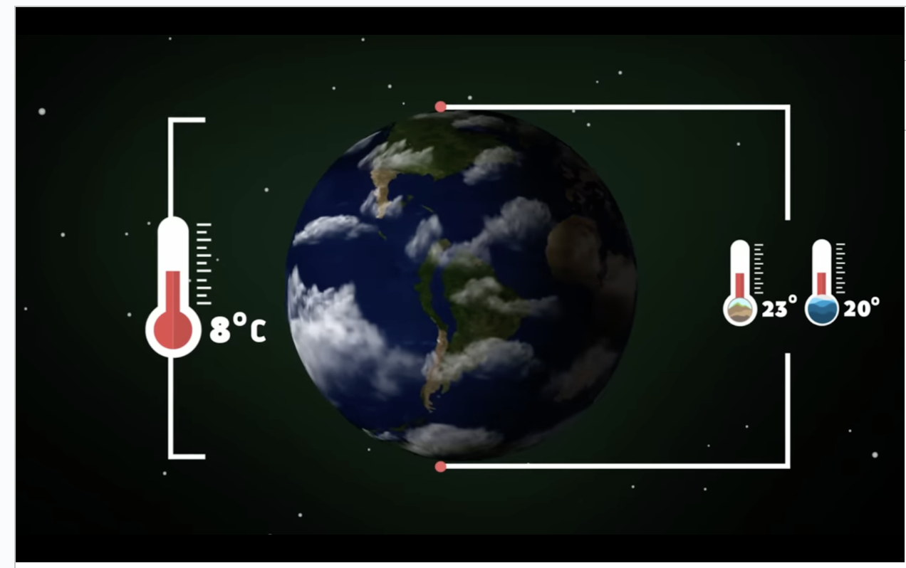
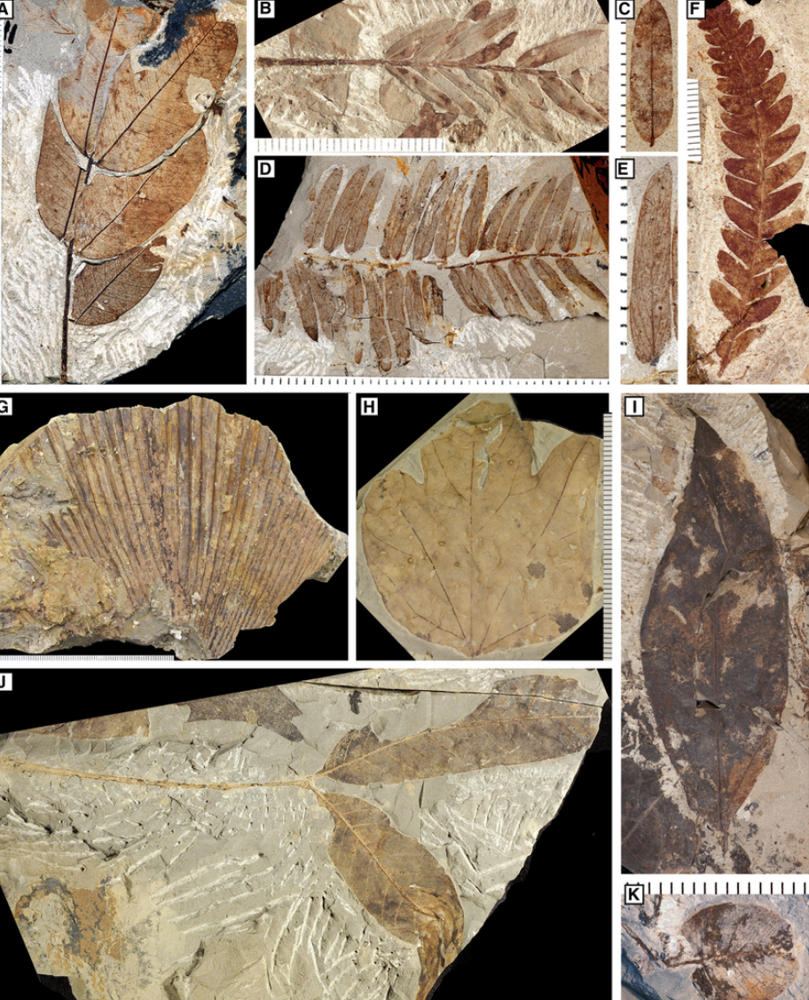

The environment during this time caused many animals to change and adapt to a new way of iife.
plant life during this time had become more savanna or tropical like where as much green as there was in this world, no one could eascape the heat
Tree leaves and plant leaves had changed and adapted to become more warm
The ocean has changed its chemistry to where water had become unsustainable to support certain marine life animals.
The way we got here isn't exactly known but we do know that a potential cause was the release of greenhouse gasses
These gasses include
these gasses came from volcanoes erupting around the world
With those gasses the planets temperatures raised substantially and the ice caps did not exist during this time
the record breaking heat during this time period caused a shift as to how plants look and absorb sunlight
